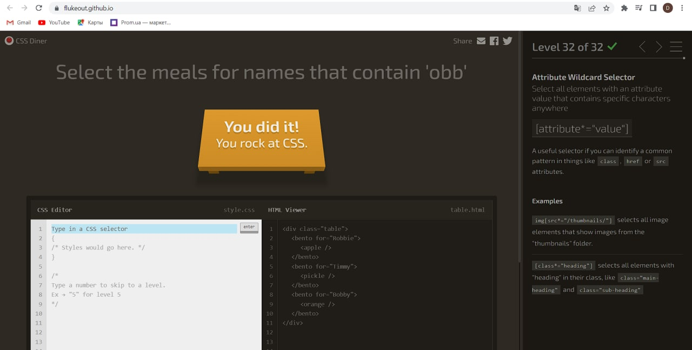
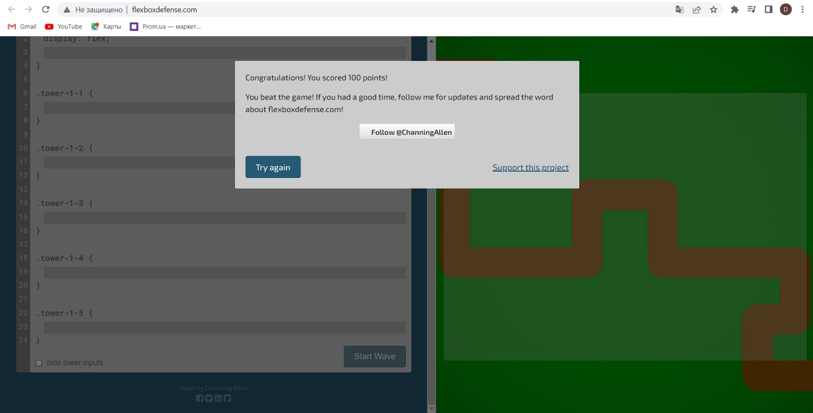

Враження: цікавенька навчальна гра, з'явилося розуміння як розподіляється простір сторінки, 24 рівень змусив трішки подумати, але в цілому все було зрозуміло.
Враження: напевно для мене, це було найскладніше завдання з усіх трьох, на яке я витратив найбільше часу відповідно, багато інформації було дізнано з цього завдання, але я вагаюсь сказати, що все запам'ятав.
Враження: прикольна гра, доволі легке завдання на повторення матеріалу з Flexbox Froggy. Радий, що можна було відключити звук пострлів веж, бо звук там жахливий.